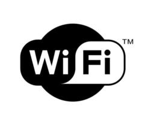

A World Wide Web designa um sistema de documentos em hipermídia que são interligados e executados na Internet. Os documentos podem estar na forma de vídeos, sons, hipertextos e imagens.

Wi-Fi é uma abreviação de "Wireless Fidelity", que significa fidelidade sem fio, em português. Wi-fi, ou wireless é uma tecnologia de comunicação que não faz uso de cabos, e geralmente é transmitida através de frequências de rádio, infravermelhos etc. O wi-fi não necessita de licença para instalação e/ou operação.